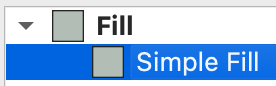
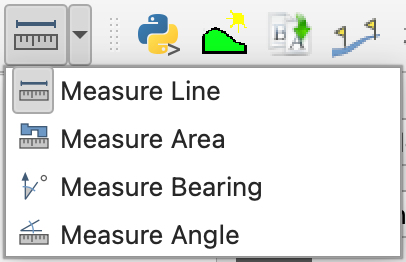
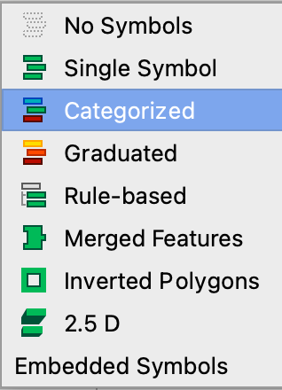
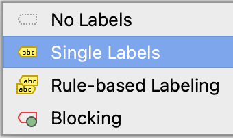

1 Getting started with GIS
Date of practical: 2nd October 2025
To master QGIS, one must start with the basics. This exercise introduces the foundational skills that will underpin the rest of this module and beyond - including your dissertation. Take your time, ask questions, and make sure you are confident with each step before moving on.
To become familiar with the Quantum GIS (QGIS) environment for visualising and processing geospatial data. You will learn how to open various types of data layer, adjust the way they look, explore their attributes, and select features for further analysis.
1.1 Starting up
Check this works: Go to OneDrive on the web (onedrive.live.com or your work/school portal). Navigate to Shared in the left sidebar, then find the folder shared with you Open the folder and click Sync in the top toolbar. This will download and sync the folder to your PC, and it’ll appear in File Explorer under your OneDrive section
Launch
QGIS. This could be on a University computer, via a remote desktop, or on your own computerFrom the menu bar, click
Project>New. Find the shortcut icon to create a new projectAdd your first vector layer in QGIS. From the menu bar, click
Layer>Add Layer>Add Vector Layer...Click the
Browseicon ( ) and navigate to the folder where the data is stored, i.e.
) and navigate to the folder where the data is stored, i.e. GEG276Open the
British_Isles_land_polygonsfolder and click on the corresponding.gpkgvector layerClick
Open>Add>Close. This dataset from the OpenStreetMap project consists of polygons representing the many islands making up the British Isles. Note the layer is now listed under theLayerspanel. You can also drag-and-drop datasets from the browser straight into the Map Canvas

1.3 Adjusting style properties
From the
Layerspanel, right-click onBritish_Isles_land_polygonsand clickProperties...>Symbology. A useful shortcut toPropertiesis to double-click the layerClick
Simple Filland experiment with changing the layer symbology’s colours, styles, and widths. You have complete control over how vector layers appear. When designing a map, consider carefully how to choose an appropriate style for each layer

- From the menu bar, click
Project>Saveand save your project to a suitable location. Find the shortcut. Remember to save regularly from now on!
1.4 Measuring geospatial objects
-
Click the drop-down arrow next to the
Measureicon to select the appropriate tool for measuring:- The length of Great Britain (in miles)
- The approximate area of the Isle of Man (in square kilometres)

Use left-click to add points, and right-click to stop taking the length / area measurements
Share your answers on Menti! Being able to measure geographic features is a fundamental objective of GIS analysis
1.5 Exploring the Attribute Table
- From the
Layerspanel, right-click onBritish_Isles_land_polygonsand clickOpen Attribute Table
An attribute table is a fundamental part of all GIS datasets. Each row of the table corresponds to a single feature (e.g. a polygon) of the vector layer, and each column, or attribute (of which there can be as many as is needed), records a property of the feature (e.g. name, area, circumference). This particular data layer has two attributes: fid (field identifier) and Area.
-
Arrange the Map Canvas and attribute table windows so that you can see both on screen at once. To understand how the attribute table corresponds with the vector layer:
- Sort the attribute table according to each polygon’s area by clicking the
Areacolumn title. Repeated clicks will sort by ascending or descending the values - Click a row number to select the polygon to which it corresponds. The selected polygon in the Map Canvas has now been highlighted yellow
- Click the
Zoom map to the selected rowsicon in the top-right corner () to zoom to the selected polygon in the Map Canvas
- Sort the attribute table according to each polygon’s area by clicking the

Repeat the step above to explore the ten largest islands of the British Isles. Can you name the seventh-largest? If so, submit it on Menti!
-
You can also select features in the Map Canvas to identify their corresponding attributes in the attributes table:
- Click the
Select Featuresicon ( )
) - Select (highlight in yellow) the Isle of Wight
- In the attribute table, click the
Move selection to topicon ( ) to move the selected line of the table to the top
) to move the selected line of the table to the top - Read the area of the feature - which is in square metres - and convert it to square km (i.e. divide by 1,000,000)
- Report your result on Menti!
- Click the
Click the
Deselect featuresicon () to deselect the current selection. These functions will be very useful later on
1.6 Arranging layers
Add the
Wales_Principal_Areas.gpkglayer in theUK_Boundariesfolder to your project. This dataset consists of polygons representing the Principal Areas (otherwise known as counties) of Wales. Note this layer will also appear in theLayerspanelAdjust the style of this layer and explore its attribute table
Experiment with switching layer visibility on or off using the tick boxes in the
Layerpanel ( ). This becomes essential when managing multiple layers in a project
). This becomes essential when managing multiple layers in a projectChange the order of the layers by dragging each upwards or downwards in the layer panel
Notice how the seaward political (Principal Area) boundary of Wales goes beyond the coastline (Land Polygons). This is because the physical land boundary is generally classified according to the mean high water mark, while administrative boundaries are normally classified according to the mean low water mark. That’s Geography!
Move
Wales_Principle_Areasto the top of theLayerspanelOpen the layer’s
SymbologywindowUse the drop-down menu to change the symbology source from
Single SymboltoCategorized

Use the
Valuedrop-down menu to select the attributenameClick
Classify>OK. How colourful!
1.7 Labelling layers
Select
Wales_Principal_Areas layerin theLayerspanelFrom the menu bar, click
Layer>Labelling. Find the shortcuts to this window (hint - check outProperties...)Use the drop-down menu to change the labelling source from
No LabelstoSingle Labels

- Change the
Valuedrop-down menu to label the Wales Principle Area polygons according to their English or Welsh names

-
Experiment with modifying the labels by:
- Changing the text style (
 ) e.g. style and size
) e.g. style and size - Changing the label format (
 ) e.g. wrapping and orientation
) e.g. wrapping and orientation - Adding a text buffer (
 )
) - Changing the label placement (
 )
) - Playing around with other options. You are in complete control!
- Have you saved your project recently?
- Changing the text style (
Now that the Principal Areas have been labelled, zoom out. Notice how QGIS chooses to place and resize the labels so that they remain visible, but switches some of them off to avoid overlapping text. This is a fundamental part of map design and QGIS tries to optimize readability. You can control this behavior through the Labelling window and you are encouraged to experiment.
1.8 Adding and filtering data
Add the vector layer
Wales_operational_windfarms.gpkgto your project. These data are from the UK Renewable Energy Planning Database and represent the location of operational wind farms across WalesExamine the attribute table
Adjust the layer’s style, noting that point data is represented in a different way to polygon data
Label the wind farms by their name or by their generation capacity
Add the vector layer
gis_osm_roads_free_1.gpkg, which is in the folderBritish_Isles_geofabrik>wales. These data form part of the Open Street Map project and represent all roads in Wales. This is a large dataset and may take time to load and display-
Once again, for this layer:
- Examine the attribute table
- Experiment with different styles for line data
- Try labelling the roads with the attribute
ref(i.e. the road number). See how these labels are displayed as you zoom in and out of the map
-
There is a lot of data here! So let’s subset it. There are many ways to make subsets of data layers to select only the data you need or that you want to display. To filter the data universally:
- Right-click on the roads layer and click
Filter... - This tool allows you to easily see all the unique values contained in each field (or column) of the attribute table. Click
fclass>All. You can now see all the unique classes of road in the vector layer - Under
Provider Specific Filter Expression, type"fclass" IN ('primary', 'trunk', 'motorway'). Make sure of precise punctuation and spacing - Click
OK. Your map should now only display roads classed as primary and secondary. A funnel icon () has also appeared next to the layer in name in the `Layers’ panel, to remind you a filter has been applied - Experiment with the filter to see which combinations of data you can display
- When you have finished, click
Clear>OKto remove the filter and close the tool
- Right-click on the roads layer and click
-
To filter the data by defining what is presented in the map:
- Open the layer’s
Symbologywindow - Use the
Categorizedoption to categorise the road symbology according to thefclassattribute - Delete all the road classes except
primary,trunk, andmotorway. See if you can make this task easier for yourself by using theShiftandCtrlkeys… - Double-click the line symbol per category to choose a suitable symbology for these remaining roads (e.g. thick red for primary, very thick light blue for motorway)
- Open the layer’s
Add the
gis_osm_waterways_free_1.gpkgvector layer in theBritish_Isles_geofabrik>walesfolders. What colour would be best for these?
1.9 Adding external data
Navigate to datamap.gov.wales
Search for “Wales Coast Path” and click on the link
Under
Select spatial data format, chooseOFC Geopackageand clickDownloadMove the downloaded file to your OneDrive
Open the layer in QGIS and explore it
Try searching for and downloading other GIS data files from DataMapWales, geofabrik.de, or any another source
When you’ve found a juicy dataset, report it on Menti
Searching for geospatial datasets should show you how easy it can be to find and download data from the internet. This will also provide inspiration for dissertation ideas, which is now on your horizon
1.10 Have you finished?
- Congratulations! You’ve learned the basics of QGIS. Make sure that you’ve understood all the steps above. Repeat if necessary, and ask for help or advice from the demonstrators. You will need this knowledge in future exercises and for the assessments.
By the end of this exercise you should:
- Be able to create a new QGIS project, add vector layers, change their style and navigate around them.
- Understand how to re-order layers, switch layer visibility on and off, and remove layers.
- Appreciate the relationship between GIS layers and attribute tables, and be able to label features.
- Know how to download data for use in QGIS.